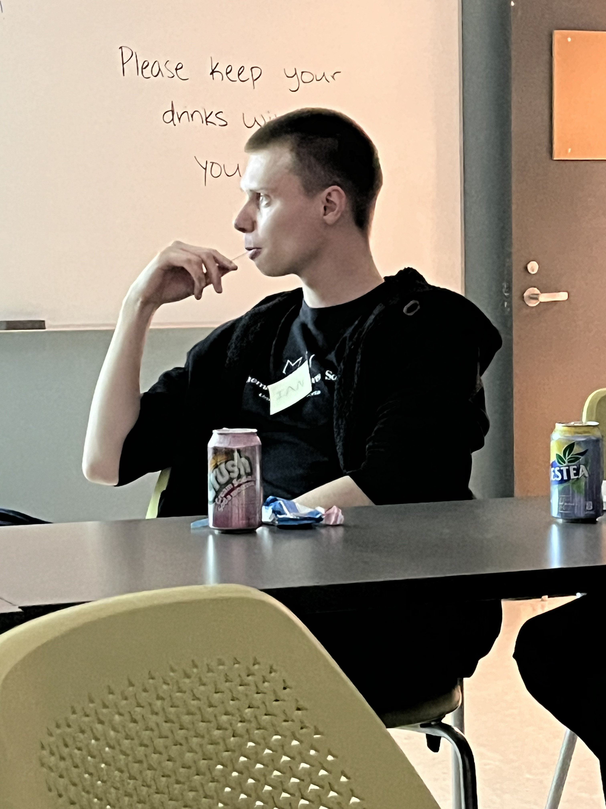

Dat Boi Sherp

About him
He is a math genius from loo and originally came from berta. Has an IQ in excess of 250 and is currently solving p = np. Sources say he already solved it and is just writing the publication paper. He previously worked on satellites at Kepler and taking down the capitalist system at Hudson River Trading.Sherp is suspected to be a communist???!!! Many people think he is a card carrying member of Marxist-Leninist Party!! Could this be true? Many people think it is :0
His Publications
-
Approximate Minimum Sum Colorings and Maximum k-Colorable Subgraphs
of Chordal Graphs
Ian DeHaan and Zachary Friggstad
WADS 2023
pdf proceedings
Fan cam

Thanks to cameronsworld for
the cool gifs